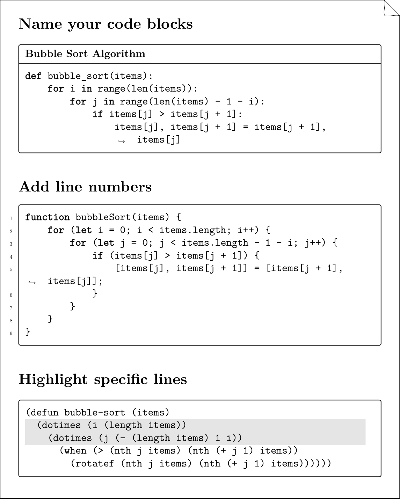
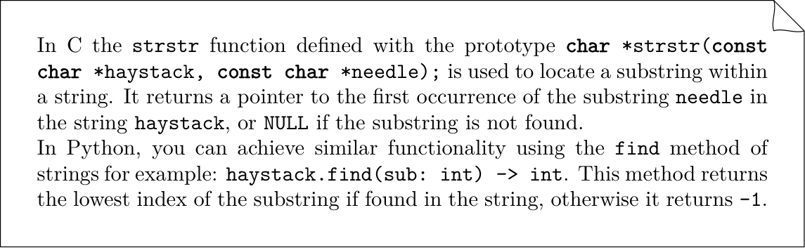

Code¶
Code fences are one of Markdown’s greatest hits: drop a triple backtick block,
label it, and you get nicely formatted snippets. A fenced code block is the
degenerate case of TMark's data-directive family:
its info string is <lang> <node>, and the node word defaults to code.
Code Blocks¶
You can insert code snippets and specify options in the info string.
- Line numbers with
linenums="1" - Title with
title="filename.ext" - Highlight specific lines with
hl_lines="2-3" - An external source with
include="path/to/file"
The info string may also end with a full attribute list in braces, which is where a class or an id lives:
```python {.wide title="hanoi.py"}
print(1)
```
The highlighting engine is global, set with press.code.engine: pygments
(the default, Tectonic-safe), listings, verbatim or minted (which needs
shell escape).
Name your code blocks¶
def bubble_sort(items):
for i in range(len(items)):
for j in range(len(items) - 1 - i):
if items[j] > items[j + 1]:
items[j], items[j + 1] = items[j + 1], items[j]
Add line numbers¶
1 2 3 4 5 6 7 8 9 | |
Highlight specific lines¶
(defun bubble-sort (items)
(dotimes (i (length items))
(dotimes (j (- (length items) 1 i))
(when (> (nth j items) (nth (+ j 1) items))
(rotatef (nth j items) (nth (+ j 1) items))))))
External sources¶
Put include= on the info string to read the code from a file at render time,
keeping samples reusable across docs. The file is never pasted into the source,
so a fence inside it is just text.
```python include="examples/code/bubble_sort.py" title="bubble_sort.py"
```
The path is looked up in the document's own directory first, then along the
include search path — --include-path, press.include_paths, and on a site
the base_path of pymdownx.snippets, which is what a path written for
--8<-- was written against. The order is the same on both media, so a fence
that resolves in the PDF resolves on the web.
To splice a whole Markdown file into the document instead, use the include
role on a line of its own:
{include}(examples/code/bubble_sort.md)
The PyMdownX snippet syntax --8<-- "file" is accepted as deprecated sugar; it
pastes text before parsing, which breaks on nested fences, and it never rebases
relative paths. See Migrating to TMark.
Any dash count is the same marker¶
The marker is PyMdownX's own, -{2,}8<-{2,}: two or more dashes on each
side, the two sides free to differ. --8<--, ---8<---, --8<---- and
-----8<----- are one spelling, and none of them is a divider. This matters
because TeXSmith's own corpus writes three dashes throughout: for a long time
only the two-dash form was recognised, so every one of those includes quietly
stayed literal text.
A ; before the marker is PyMdownX's escape: the line includes nothing and is
the text it spells, less one ;, with no diagnostic — writing the marker is
not the deprecated act. The rule holds for a fence whose body is one snippet
line, and there the ; is also what the printer writes, a fence body having no
backslash escape of its own; in a paragraph the printer escapes the literal
marker with a backslash instead.
| You wrote | Normal form |
|---|---|
--8<-- "chapters/boot.md" |
{include}(chapters/boot.md) |
---8<--- "chapters/boot.md" |
{include}(chapters/boot.md) |
a fence body --8<-- "hanoi.py" |
```python include="hanoi.py" |
;---8<--- "chapters/boot.md" |
\---8<--- "chapters/boot.md" |
With LaTeX output¶
Here’s what the above examples look like when rendered with TeXSmith:

Captioned listings¶
A Listing: caption line promotes a code block to a numbered, referenceable
listing — the same rule as every other float:
```python title="bubble_sort.py"
def bubble_sort(items): ...
```
Listing: Bubble sort, naive version. {#lst:bubble}
@lst:bubble is quadratic in the worst case.
Inline Code¶
You can also include inline code snippets using backticks ` like this:
Unformatted¶
To sort a list in Python, you can use the `sorted()` function.
It will simply be rendered as monospaced text in LaTeX:
To sort a list in Python, you can use the \texttt{sorted()} function.
Highlighted¶
Inline code can also be highlighted. The canonical spelling is the code role,
whose positional argument is the language; the PyMdownX #!lang shebang is
sugar for the same node.
You can use {code py}[print("Hello, World!")] to display a message in Python.
You can use `#!py print("Hello, World!")` to display a message in Python.
With TeXSmith this example renders as follows:
# Inline Code
In C the `strstr` function defined with the prototype
{code lang=c}[char *strstr(const char *haystack, const char *needle);] is
used to locate a substring within a string. It returns a pointer to the first occurrence of the substring
`needle` in the string `haystack`, or `NULL` if the substring is not found.
In Python, you can achieve similar functionality using the `find` method of strings for example: {code lang=python}[haystack.find(sub: int) -> int]. This method returns the lowest index of the substring if found in the string, otherwise it returns `-1`.
